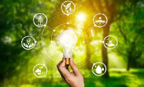
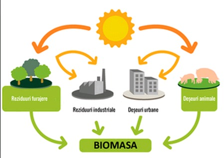

În doar 90 de minute, Soarele trimite pe Pământ suficientă energie cât să acopere consumul nostru pentru un an întreg.
Infomatii generale despre surse regenerabile de energie:
O singură turbină eoliană de mari dimensiuni poate produce suficientă energie pentru a alimenta peste 1.500 de gospodării într-un an.
Este cea mai veche și cea mai mare sursă de energie regenerabilă folosită de omenire.
Barajul „Trei Defilee” din China este cea mai mare centrală hidroenergetică din lume și poate genera 22.500 MW, mai mult decât consumul unor țări întregi.
În Islanda, aproape 90% dintre locuințe sunt încălzite direct cu energie geotermală.
Un avantaj unic: spre deosebire de solar și eolian, este disponibilă non-stop, indiferent de vreme.
Viitorul verde:
Până în 2050, se estimează că peste 70% din energia globală va proveni din surse regenerabile, dacă ritmul actual de investiții continuă.
Sursele regenerabile pot preveni emiterea a milioane de tone de CO₂ anual, reducând efectul de seră și schimbările climatice
Cum se plaseaza Romania in domeniul energiei Verzi?
Aproximativ 50% din energia electrică livrată în rețea în 2023 a provenit din surse regenerabile, conform datelor furnizate de Ministerul Energiei. Acest procent reprezintă o creștere de 5% față de 2022 și o creștere impresionantă de 8% comparativ cu 2021.
Conform estimărilor, până în 2030, mixul energetic regenerabil al României va fi compus din: 37% energie eoliană 35% energie hidro 23,5% energie solară
Impactul negativ al carbunelui:
Impactul asupra mediului
Poluarea aerului: Centralele pe cărbune emit mari cantități de CO₂, particule fine și oxizi de azot, contribuind semnificativ la schimbările climatice și la problemele de sănătate publică.
Degradarea solului și apei: Exploatarea cărbunelui lasă în urmă halde de steril și apă acidă, care poluează solul și resursele de apă din regiunile miniere.
Impactul asupra sănătății publice
Bolile respiratorii: Expunerea la poluarea aerului cauzată de centralele pe cărbune crește riscul de afecțiuni respiratorii grave, cum ar fi astmul și bronșita.
Cancerul: Expunerea pe termen lung la emisiile de gaze toxice și la particulele fine poate crește riscul de cancer pulmonar și alte tipuri de cancer.
Impactul economic și social
Costuri ridicate: Producția de energie pe bază de cărbune devine din ce în ce mai scumpă, din cauza nevoii de a plăti pentru certificatele de carbon, ceea ce o face nerentabilă pe termen lung.
Depopularea regiunilor miniere: Închiderea minelor duce la pierderea locurilor de muncă și la depopularea zonelor miniere, afectând negativ economia locală și creând un șomaj ridicat.
Impactul pozitiv al energiei verzi:
Reducerea poluării și a emisiilor de carbon – contribuie la combaterea schimbărilor climatice.
Protejarea sănătății oamenilor – aerul mai curat reduce bolile respiratorii și cardiovasculare.
Epuizarea mai lentă a resurselor naturale – spre deosebire de petrol, cărbune sau gaze, resursele regenerabile se refac.

Independență energetică – țările pot depinde mai puțin de importurile de combustibili fosili.
Locuri de muncă noi – în industria panourilor solare, turbinelor eoliene, infrastructurii verzi.
Dezvoltare durabilă – comunitățile rurale pot beneficia de energie locală și mai ieftină.
Exemple de tehnoligii care fac exploatoarea de energie verde posibila:
Locuri de muncă noi – în industria panourilor solare, turbinelor eoliene, infrastructurii verzi.
Folosesc oglinzi/lentile pentru a concentra razele solare și a produce căldură, transformată apoi în electricitate.
Folosesc energia vântului pentru a învârti elice care pun în mișcare un generator electric.
Utilizează forța apei curgătoare pentru a genera electricitate.
Exploatează căldura din interiorul Pământului pentru a produce abur și energie electrică.

Arderea sau fermentarea resturilor vegetale și organice pentru a obține energie termică sau biogaz.
Obținut prin electroliză (folosind energie regenerabilă pentru a separa apa în oxigen și hidrogen), poate fi folosit drept combustibil curat.